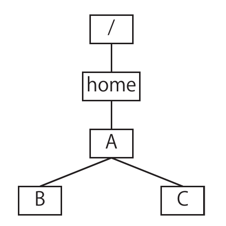
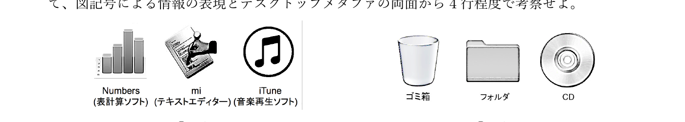

7月28日（木）4限｜大問3（うち大問3は選択）
インターネットで出発地から目的地までの経路を気軽に検索したり、乗車券を購入したりできる時代である。このような情報システムの動作原理について考えてみよう。このようなシステムの多くはA／B型の構成である。AはBに対しサービスを要求する。BはAからの要求に従い、実際に適切な乗換や道順を発見し、返送する。このようなシステムでは情報を適切に管理するデータベースが必要となる。データの破壊等を防ぐため、データベースは通常Cによって不正アクセスから守られている。さらに、ネットワークの切断などによって処理が中断した場合にも一貫性を確保する必要がある。データベースへのデータ更新を含む一連の処理をD処理と呼び、1つの目的を達成するために必要な作業の開始から終了までをEと呼ぶ。ひとつのEの中に複数のD処理が含まれる場合もある。Dの途中で処理が中断した場合には、Fと呼ばれる処理を起動し、Dが開始される前の状態にデータベースの内容を戻す。①排他制御や②サービス停止攻撃や③盗聴などにも注意が必要である。データベースに格納するデータの表現形式も重要である。例えば一般的な都市地図では図や図記号を用いた表現となっている。この形式は人間にとっては便利であるが、情報システムではコンピュータにとってより扱いやすい表現を用いる場合が多い。例えば、路線図であれば④ネットワークモデルで表現するのが普通である。
クライアント・コンパイラ・サーバ・スループット・セッション・トランザクション・パケット・ファイアウォール・ブラウザ・プロトコル・ロールバック・CCD・TCP
(1) 上の文章の空欄A〜Fに当てはまる語句を、上の語群から選んで入れよ。
文章全体は「サービスを要求する側／要求に応じる側」という2者構成（クライアント・サーバ）から始まり、データベースを不正アクセスから守る仕組み（ファイアウォール）、データ更新を含む一連の処理（トランザクション）、それを束ねる作業単位（セッション）、中断時に元の状態へ戻す処理（ロールバック）という順に、データベースシステムの基本用語を並べている。
A=クライアント／B=サーバ／C=ファイアウォール／D=トランザクション／E=セッション／F=ロールバック
クライアント：サーバにサービスを要求する側の主体・機器。／コンパイラ：高水準言語のプログラムを機械語に変換するソフトウェア（本文とは無関係の紛らわしい選択肢）。／サーバ：クライアントからの要求に応じてサービスを提供する側の主体・機器。／スループット：単位時間あたりに処理できるデータ量・処理量（同じく紛らわしい選択肢）。／セッション：1つの目的の達成のために開始から終了まで続く一連のやり取りの単位。
トランザクション：データベースへのデータ更新を含む、一貫性を保ったまま実行されるべき一連の処理のまとまり。／パケット：ネットワーク上でデータを送る際に分割された小さな単位（本文には登場しない）。／ファイアウォール：規則に基づいて通信を許可・遮断し、不正アクセスからシステムを守る仕組み。／ブラウザ：Webページを閲覧するためのクライアント側ソフトウェア（本文の空欄には対応しない）。／プロトコル：通信の際に従うべき手順・規約（本文の空欄には使われていない）。
ロールバック：トランザクションが中断した際に、そのトランザクションが開始される前の状態にデータベースを戻す処理。／CCD：光を電気信号に変換する撮像素子（本文とは無関係）。／TCP：信頼性のあるデータ転送を実現する通信プロトコルの一種（本文の空欄には使われていない）。
(2) 下線部①「排他制御」はどのような目的で行われるか、2行程度で説明せよ。
複数のトランザクションが同時に同じデータへアクセス・更新しようとすると、一方の更新結果が他方に上書きされて失われてしまう（ロストアップデート）など、データの不整合が発生しうる。排他制御は、あるトランザクションがデータを操作している間、他のトランザクションからの同時アクセスを制限することで、こうした競合によるデータの不整合を防ぐために行われる。
(3) 下線部②「サービス停止攻撃」とはどのような攻撃か、2行程度で説明せよ。
サービス停止攻撃（DoS攻撃、Denial of Service攻撃）は、大量のリクエストを送りつけるなどしてサーバやネットワークに処理しきれないほどの過大な負荷をかけ、システムの応答を極端に遅くしたり停止させたりすることで、正当な利用者がサービスを利用できない状態にする攻撃である。
(4) Aさんが、Bさんに向けてメッセージMを、盗聴を防ぎながら伝達したい。公開鍵暗号方式を用いてこれを実現する手順を、「生成する・公開する・暗号化する・復号する」という4つの語をすべて使い、3行程度で説明せよ。
まずBさんが、対になる公開鍵と秘密鍵の組を生成する。Bさんは公開鍵を（誰でも入手できる形で）公開するが、秘密鍵は自分だけが持ち、外部には一切明かさない。Aさんは公開されているBさんの公開鍵を用いてメッセージMを暗号化すると、その暗号文を通信路に送り出す。通信路上で暗号文が盗聴されても、対応する秘密鍵を持たない第三者には元のメッセージMを取り出すことはできない。Bさんは受け取った暗号文を、自分だけが持つ秘密鍵を用いて復号することで、初めてメッセージMを読むことができる。
(5)(a) 駅をノード、路線をエッジとして路線図を捉えるとき、これを木構造として表すのは不適切である。その理由を1行程度で述べよ。
(5)(b) サーチエンジンが、ウェブページ間のリンク関係というネットワークモデルを基に行っている解析について、2行程度で説明せよ。
(5)(a) 実際の路線図では、乗り換え駅などで複数の路線が交わり合い、ある駅から別の駅へ至る経路が複数存在する場合がある。すなわちノード間に閉路（ループ）が存在しうる。木構造はどのノードも親がただ1つで閉路を一切持たないという特別な構造なので、閉路を持つ路線図全体を木構造として正確に表すことはできない。
(5)(b) サーチエンジンは、各ウェブページをノード、ページ間のリンクをエッジとするネットワーク（グラフ）とみなし、この構造を解析することで検索結果の重要度を決めている。具体的には、より多くの（あるいはより重要度の高い）ページからリンクされているページほど重要度が高いとみなし、被リンク数やリンク元ページ自身の重要度を再帰的に評価することで、各ページの重要度を算出し、検索結果の順位付けに用いている。
問1のD〜Fで扱われているトランザクション処理は、一般にACID性（原子性 Atomicity・一貫性 Consistency・独立性 Isolation・耐久性 Durability）という4つの性質を満たすように設計される。本問で扱われた排他制御（①）は独立性を保つための仕組みであり、ロールバック（F）は、トランザクションが中断した場合に「全部成功」か「全部失敗（開始前の状態に戻す）」のどちらかしか許さないことで原子性を保つための仕組みである。中途半端に更新が反映された状態を残さないことが、データベースの一貫性を守るうえで本質的に重要になる。
また問1-5で見たように、路線図やウェブのリンク構造は一般にネットワークモデル（グラフ）で表されるが、木構造はその中でも「閉路を持たない」という特別な性質を満たすグラフの一種にすぎない。大問2で扱うフォルダ階層はまさにこの木構造の典型例であり、「どのノードも親はただ1つ」という制約があるからこそ、後述するように単純な規則で全体を体系的に辿ることができる。これに対し路線図やウェブのように閉路を許すネットワークモデルでは、ノード間の経路は一意に定まらず、より複雑な解析（PageRankのような重要度の再帰的評価など）が必要になる。
ファイルシステムのフォルダ（ディレクトリ）を操作する、次の5種類のコマンドを考える。
pwd — 現在の位置（カレントディレクトリ）を表示する。ls — 現在の位置にあるフォルダ・ファイルの一覧を表示する。ls x — フォルダxの中にあるフォルダ・ファイルの一覧を表示する（現在の位置は変わらない）。cd x — フォルダxに移動する（現在の位置が変わる）。「..」は1つ上のフォルダを表す。mv x y — フォルダxを、フォルダyの中に移動する（現在の位置は変わらない）。下図は、ある時点⓪における、ホームディレクトリ以下のフォルダ階層構造である（Aの下にB、Cがある）。この状態から始めて、以下の3つの端末パネルを、左上→右上→右下の順に続けて実行していく。

$ pwd
/home/A
$ ls
B C （⓪の状態）
$ cd B
$ pwd
/home/A/B
$ ls
D E
$ cd D
$ pwd
1
$ ls
（何も表示されない）
$ cd ..
$ pwd
/home/A/B
$ ls E
（何も表示されない）
$ cd ../C→ 続けて右上のパネル2を実行する（cd ../Cにより現在位置は /home/A/C になる）。
$ pwd
2
$ ls
F G
$ ls F
H I
$ ls F/H
（表示なし）
$ ls F/I
（表示なし）
$ ls G
J
$ ls G/J
（表示なし） （①の時点）
$ mv F ..
$ cd ..
$ ls
B C F （②の時点）
$ ls F
H I
$ mv B C/G/J→ 続けて右下のパネル3を実行する（mvは現在位置を変えないので、現在位置は依然 /home/A のまま）。
$ ls
3 （③の時点）
$ cd C
$ ls
4
$ cd 4
$ pwd
5
$ ls
J
$ cd J
$ ls
6
$ cd 6
$ ls
7
$ pwd
8(1) ⓪の時点の木構造は上図で与えられている。①、②、③それぞれの時点で判明しているフォルダ階層構造全体を、⓪の図と同じ形式（ボックスと矢印）で示せ。
①の時点までに、パネル1・パネル2の ls によってB,C,D,E,F,G,H,I,Jの存在と親子関係がすべて判明している。まだmvは実行されていないので、⓪の構造がそのまま枝を伸ばした形になる。
①の時点：
②の時点では、mv F ..によってFが「1つ上」＝Cの親であるA自身の直下に移動している。これによりFはCの子ではなくAの子になり、Cの子はGだけが残る。Fの内部構造（H,I）自体はmvによって変化しない。
②の時点：
③の時点では、mv B C/G/JによってBが「C/G/Jの中」に移動している。したがってBはAの子ではなくJの子になる（Aの子はC,Fの2つに減る）。Bの内部構造（D,E）自体はmvによって変化しない。
③の時点：
(2) 上の3つの端末パネルの空欄1〜8を埋めよ。
空欄1：cd Bのあとの現在位置は/home/A/B、続けてcd Dを実行しているので、現在位置は1=/home/A/B/Dになる。
空欄2：パネル1の最後のcd ../Cは、/home/A/Bから1つ上（/home/A）に戻り、さらにCへ入る操作なので、現在位置は2=/home/A/Cになる。
空欄3：③の時点で判明している通り、Bはmv B C/G/Jによってすでに/home/Aの外（C/G/Jの中）に移動済みである。したがって現在位置/home/Aの直下に残っているのはCとFの2つだけであり、3=C Fとなる。
空欄4：cd Cのあと/home/A/Cでlsする。Cの子はもともとF,Gだったが、Fは②の時点で1つ上（A）に移動済みで抜けているので、Cの直下に残っているのはGだけであり、4=Gとなる。
空欄5：直後のcd G（空欄4の値）により、/home/A/Cから1つ下のGへ移動するので、現在位置は5=/home/A/C/Gになる。
空欄6：cd Jのあと/home/A/C/G/Jでlsする。JはもともとJ自身の子を持っていなかったが、mv B C/G/JによってBがJの中に移動してきているので、Jの直下にはBが1つだけあり、6=Bとなる。
空欄7：直後のcd B（空欄6の値）により、/home/A/C/G/JからBへ移動する。Bの内部構造（D,E）はmvによる移動の影響を受けず、そのまま保たれているので、7=D Eとなる。
空欄8：ここまでの移動をたどると、現在位置は/home/A/C/G/Jのさらに下のBなので、8=/home/A/C/G/J/Bになる。
(3) このように、「1つ下のフォルダXに降りる（cd X）」と「1つ上に戻る（cd ..）」という2種類の操作だけで、フォルダ・ファイルの全構成を重複なく体系的に辿ることができた。この理由を述べよ。
フォルダ・ファイルの構成は、どの項目もその親がただ1つに定まり、かつ閉路（ある項目から出発して自分自身に戻ってくるような経路）を持たない構造、すなわち木構造になっている。この性質があるため、「現在いる場所から子に降りる」「親に戻る」という2つの操作を、深さ優先の順序で繰り返すだけで、迷うことなく（同じ場所を何度も経由することなく）木全体のすべての項目に、重複なく到達することができる。もし途中で複数の親を持つ項目や閉路が存在すれば、同じ場所に複数回到達したり、堂々巡りになって全体を体系的に辿り切れなくなる可能性があるが、木構造ではそのような曖昧さが原理的に生じない。
本問で扱った深さ優先の「↓（子へ降りる）／↑（親へ戻る）」という2操作の組は、木構造をもつデータ全般（フォルダ階層に限らず、組織図や分類階層など）を体系的に走査する深さ優先探索（DFS）の考え方そのものである。木構造では、任意のノードに到達する経路がただ1つしかないため、どの経路を辿ってきたかによって迷うことがなく、上記の2操作だけで全体を無駄なく（各ノードをちょうど1回ずつ）巡ることができる。これは大問1の背景知識で述べたネットワークモデル（グラフ）との対比でもあり、木構造は「探索や管理が特に簡単になる」という理由から、ファイルシステムに限らず様々な場面（構文木、意思決定木など）で好んで採用される構造である。
問題A・Bのいずれか一方を選択。ここでは両方を掲載する。
平成25年の公職選挙法改正により、インターネットを利用した選挙運動が可能になった。これに関して以下に答えよ。
(1) インターネット選挙運動において誹謗中傷が特に問題となるのは、情報技術のどのような性質によるものか、2行程度で述べよ。
(2) 情報セキュリティの観点からどのような技術的な懸念が考えられるか、4行程度で述べよ。
(3) 従来の選挙運動が抱えていた制約からの解放という観点で、インターネット選挙運動のメリットを4行程度で述べよ。
(1) SNS等のインターネットメディアは、発言が瞬時に、かつ広範囲・不特定多数へと伝播していく「多対多の通信」の性質を持つ。さらに匿名での発信が容易であるため、対面でのやり取りや従来のマスメディアに比べて発言の責任の所在が不明確なまま、誹謗中傷が急速に拡散・助長されやすい。
(2) 候補者本人や有権者になりすました偽アカウントによる虚偽情報の発信、選挙関連ウェブサイトの改ざんやDoS攻撃（大問1の②で扱ったサービス停止攻撃）による選挙活動の妨害、フィッシング等による有権者の個人情報の窃取、組織的な投稿・拡散（いわゆる「なりすまし」や「サクラ」）による情報操作といったリスクが考えられ、これらへの対策が課題となる。
(3) 従来の選挙運動には、掲示・配布できるビラの枚数や、候補者が実際に訪問できる時間・場所などの物理的・時間的・資金的な制約があり、資金力に乏しい候補者ほど不利になりやすかった。インターネットを利用すれば、低コストで、時間や場所を問わず有権者に政策や活動内容を届けることができ、候補者側だけでなく有権者側も、自分の都合のよい時間・場所で情報を収集・比較検討できるようになる。これにより、従来の制約によって発言力を持ちにくかった候補者・有権者も、比較的対等な条件で情報発信・情報収集に参加できるようになった。
(1) ファイルのアイコンをゴミ箱にドラッグして削除する操作を例に、GUIにおけるデスクトップメタファの利点を、「直接操作・現実世界・類推」の3つの語を用いて3行程度で説明せよ。
(2) 下図のように、アプリケーションのアイコンにはⒶそのアプリの作業内容を表す図記号（Numbers、mi、iTuneの例）が、ファイル・フォルダ・デバイスのアイコンにはⒷ実物を模した図（ゴミ箱、フォルダ、CDの例）が使われることが多い。このような使い分けが効果的な理由を、図記号による情報の表現とデスクトップメタファの両面から4行程度で考察せよ。

(1) 「ゴミ箱にゴミを捨てる」という現実世界での行為との類推によって、ファイルを削除するという本来抽象的な操作を、ファイルのアイコンをゴミ箱のアイコンまで直接操作（ドラッグ&ドロップ）するという直感的な動作として表現できる。これにより、ユーザは特別な削除コマンドを覚える必要がなく、現実世界での経験をそのまま応用して操作方法を理解できる。
(2) アプリケーションは「何をする道具か」という機能・作業内容そのものが重要な情報であり、それ自体に対応する具体的な実物は存在しない。そのため、その機能を象徴する図記号（グラフの絵・ペンの絵・音符の絵など）による記号的な表現、すなわちⒶの方式が適している。一方、ファイルやフォルダ、CDなどには、書類・書類入れ・円盤といった実世界の対応物が存在するため、その実物の見た目を模したアイコン（Ⓑの方式）を使うことで、デスクトップメタファとしての「現実世界の道具・物との類推」がそのまま働き、ユーザは特別な説明なしにその対象が何であるかを直感的に理解できる。作業内容の抽象性・実物の有無という対象の性質の違いに応じて、図記号の表現方法を使い分けることで、それぞれの場合に最も自然な類推が働くようにしているといえる。
問題A-1で見たインターネット選挙運動の課題（誹謗中傷・なりすまし等）は、SNSという「多対多の通信」と匿名性の組み合わせがもたらす負の側面であり、他年度の共通問題（2017年度・2018年度）で扱われる「炎上」の議論とも根は同じである。一方、問題A-2のデスクトップメタファは、GUIというユーザインタフェースが「現実世界との類推」を利用してユーザの認知的な負担を減らす仕組みであり、情報技術の恩恵を安全かつ直感的に享受するための工夫といえる。同じ情報技術でも、開放性・匿名性が使われ方によってリスクにも利便性にもなりうる、という視点を両問から読み取ることができる。
未知の容量$C$（正の実数）をもつ袋がある。大きさ$1,2,4,\dots,2^{n-1}$の商品がそれぞれ複数個ずつある。袋に商品を入れると、袋の容量はその商品の大きさだけ減少し、残り容量を超える大きさの商品は袋に入れられない。次の2種類の指示のみを用いて、$C$を超えない最大の整数$\lfloor C\rfloor$を求めたい。
A(大きさ) — 指定した大きさの商品が（残り容量に）入れられるかどうかを調べる（袋の状態は変化しない）。B(大きさ) — 指定した大きさの商品を実際に袋に入れる（残り容量がその分減少する）。以下の3種類の手順を考える。手順3では、大きさを重い順に並べた配列$X=(X_1,X_2,\dots,X_n)=(2^{n-1},2^{n-2},\dots,4,2,1)$を用いる。
手順1
手順2
手順3
(1) $C=5$のとき、手順1・手順2はそれぞれ何回の質問（Aの呼び出し）を行い、どのような値を返すか、動作の様子とともに答えよ。
手順1：A(1)を繰り返し試し、可能な限り大きさ1の商品を入れ続ける。$C=5$のとき、1回目から5回目までのA(1)はいずれも「可能」と判定され、そのたびにB(1)が実行されて合計は$0\to1\to2\to3\to4\to5$と増えていく。5個入れた時点で残り容量は0になっているので、6回目のA(1)では残り容量0<1となり「不可能」と判定されてループが終了する。したがって質問回数は6回、返り値（合計）は5。
手順2：同様にA(2)を繰り返し試す。$5\div2=2$余り$1$なので、1回目・2回目のA(2)は「可能」と判定され、合計は$0\to2\to4$と増える。残り容量は$5-4=1$となり、3回目のA(2)では残り容量1<2となり「不可能」と判定されてループが終了する。したがって質問回数は3回、返り値（合計）は4。
(2) 一般の$C$に対して、手順2が終了した時点での合計はどのような値になるか答えよ。
手順2は、大きさ2の商品を、残り容量が2未満になるまで入れ続ける手順である。すなわち終了時の合計は、$C$の整数部分のうち2の倍数として表せる最大の値、すなわち$C$を2で割った商（整数部分）の2倍になる。問題B-1で確認した$C=5$の場合も、$2\lfloor 5/2\rfloor=2\times2=4$となり、実際の答え（4）と一致している。
(3) $n=7$、$C=100$のとき、手順3の動作を、質問回数と最終的な合計の値とともに答えよ。
$n=7$なので$X=(64,32,16,8,4,2,1)$である。$i=1$から$i=7$まで、各回で必ず1回のA(Xi)質問を行いながら動作を追う。
ループはi=1からi=7までの7回すべてで実行され、そのたびに必ず1回のA質問を行っている（可能・不可能どちらの場合も質問自体は行う）ので、質問回数は7回。最終的な合計は$64+32+4=100$となり、これは$\lfloor 100\rfloor=100$と正しく一致している。
(4) 一般の$C$、$n$に対して、手順1と手順3の質問回数を比較せよ。
手順1は、大きさ1の商品を1個ずつ入れ続けるため、$C$個の商品を入れ終えたあとにもう1回「不可能」の判定を受けるまで、およそ$\lfloor C\rfloor+1$回の質問を必要とする。すなわち質問回数は$C$に比例（$O(C)$、線形）して増えていき、$C$が大きくなるほど質問回数が際限なく増えていく。
一方、手順3は配列$X$の長さ、すなわち$n$回だけループが回り、各回でちょうど1回の質問を行うので、質問回数はつねに$n$回（$O(n)=O(\log C)$、対数的）で済む。$X_1=2^{n-1}$が扱える最大の大きさに対応するので、$n$は$C$のとりうる大きさをおおよそ二進数で表したときの桁数に相当する。したがって手順3は、手順1よりも指数的に少ない質問回数——いわば二分探索的な効率——で同じ$\lfloor C\rfloor$を求めることができる。
(5) $1\lt j\leq n$のとき、情報$P_j$「$C\lt2^j$である」をあらかじめ知っている場合、手順3の質問回数はどれだけ減少するか、$n,j$を用いて答えよ。
(6) $0\lt k\lt j\leq n$のとき、$P_j$とは異なる情報$Q_k$であって、これを知っていれば質問回数が$k$回減少するものを1つ挙げ、「$P_j$のみを知った場合の減少分」と「$Q_k$のみを知った場合の減少分」の和が、「$P_j$と$Q_k$の両方を知った場合の減少分」に一致することを示せ。
(5) $P_j$（$C\lt2^j$）を知っていれば、$2^j$以上の大きさの商品、すなわち$X_1=2^{n-1}$から$X_{n-j}=2^{j}$までの商品は、どのみち容量を超えて絶対に入らないと最初から分かる。したがってこれら$n-j$個の商品についてはAの質問自体を省略でき、質問回数は$n-j$回減少する。
(6) $Q_k$として「$C$は$2^k$の倍数である（$C\equiv0\pmod{2^k}$）」を考える。手順3が貪欲に選ぶ商品は、$X_1$から$X_{n-k}$まで（サイズ$2^{n-1}$から$2^k$まで）はいずれも$2^k$の倍数であり、これらの中から選ばれた商品の合計も必ず$2^k$の倍数になる。$C$が$2^k$の倍数であれば、この時点での残り容量（スラック）$=C-（$それまでの合計$）$も$2^k$の倍数である。一方、手順3の貪欲な選び方の性質上、この残りスラックはつねに次に試す商品のサイズより小さい値、つまり$2^k$未満に留まる。$2^k$未満で、かつ$2^k$の倍数である非負整数は$0$しかないので、この時点での残りスラックは必ち$0$になる。したがって、それより小さい$X_{n-k+1}$から$X_n$まで（サイズ$2^{k-1}$から$1$までの、最も小さい$k$個の商品）は、容量ちょうど0が残っている状態からはどれも入る余地がなく、絶対に選ばれないと分かる。よってこれら$k$個については質問を省略でき、質問回数は$k$回減少する。
$0\lt k\lt j\leq n$のとき、$P_j$によって省略できる質問は配列の先頭$n-j$個（$X_1$から$X_{n-j}$まで）、$Q_k$によって省略できる質問は配列の末尾$k$個（$X_{n-k+1}$から$X_n$まで）である。$k\lt j$より、この先頭$n-j$個と末尾$k$個の範囲は重なり合わない（互いに素な区間）。したがって、両方の情報を知った場合に省略できる質問数は、両者を単純に足し合わせた$(n-j)+k$回に一致し、これは「$P_j$のみを知った場合の減少分$(n-j)$」と「$Q_k$のみを知った場合の減少分$k$」の和とちょうど等しい。
問題Bの全体は、「二進表現を使えば、線形な探索（手順1）を対数的な探索（手順3）に高速化できる」という、二分探索の考え方を一般化したテーマになっている。手順3が使う配列$X=(2^{n-1},\dots,2,1)$は、まさに$C$の整数部分を二進法で桁ごとに求めていく操作に対応しており、(5)(6)で見た情報$P_j$・$Q_k$は、それぞれ「上位の桁（大きい商品）」と「下位の桁（小さい商品）」に関する事前知識をどれだけ持っているかに対応する。この「階層的に絞り込んでいく」という発想は、大問2で扱ったフォルダの木構造（深さ優先で子・親をたどることで全体を体系的に探索できる）とも、根底で通じるものがある——どちらも、対象の構造（二進表現の桁、あるいは木構造の階層）を利用することで、無駄な確認（線形な総当たりや、閉路を持つグラフでの探索）を避け、効率よく目的の情報にたどり着ける、という共通の発想に基づいている。